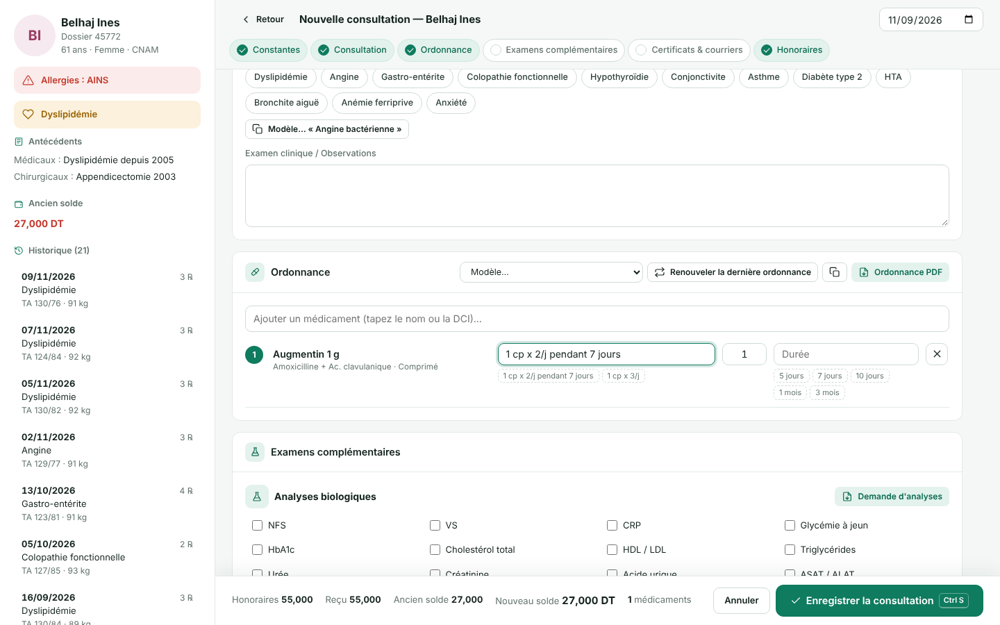

Consultation en un écran
Constantes, diagnostic, ordonnance avec recherche de médicaments, certificats et honoraires.
Vos données chez vous
Tout est enregistré sur l'ordinateur du cabinet, chiffré par mot de passe. Rien n'est envoyé sur internet.
Fonctionne hors ligne
Pas de connexion ? Le cabinet continue de travailler normalement.
Salle d'attente
File d'attente avec QR code : le patient suit son tour sur son téléphone.
Ordonnances à votre en-tête
Ordonnances, certificats, lettres et factures imprimés avec votre logo et votre cachet.
Installation et suivi
Installation, import de votre ancien logiciel et assistance inclus.
